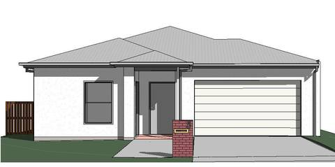
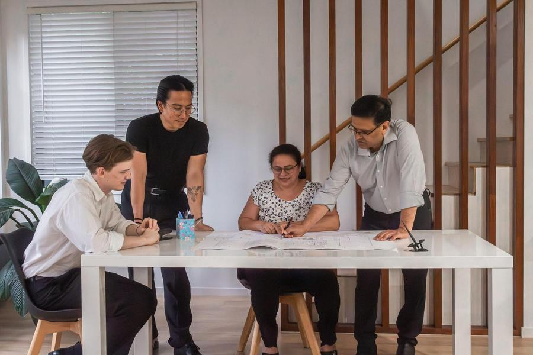
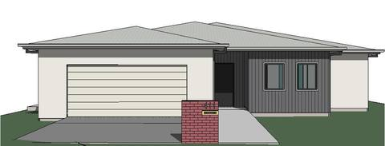

SDA · Robust category
From inception to physical manifestation, we design and plan for the built environment. Homes, offices, showrooms and warehouses across South East Queensland.
We go beyond the mere construction of structures. We craft experiences.
Led by principal Tarun Jangra, TJBD is a team of passionate building designers who specialise in residential, commercial and industrial projects. We prioritise collaboration and communication to exceed client expectations.
Each design is thought through to resonate with the people who use it. Whether it shapes a quiet moment inside a home or a landmark on a busy street, the aim is the same: places that inspire and enrich lives.
Our work runs on teamwork, precision and client welfare.

A newly delivered showroom designed to Tesla's global standards. Vehicle display, customer service and delivery sit in one clear, contemporary building that reflects the brand's focus on innovation and precision.
Swipe to see all six stages →
Specialist Disability Accommodation designed to NDIS requirements, built to feel like home. Two recent residences in Moreton Bay:


A two storey home influenced by French provincial design. A grand entrance framed by columns, arched windows and wrought iron balconies, with two side wings around a central living area.